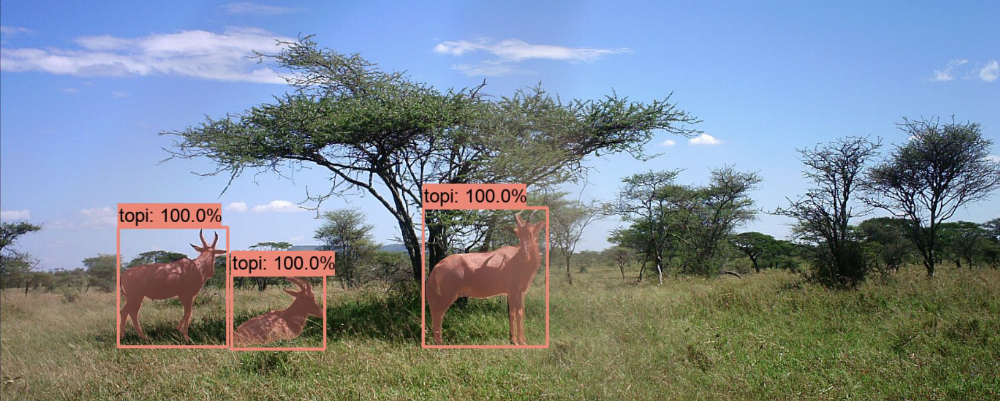

Target attendees
- Senior grad student, post-doc, early faculty, or non-academic researchers in Ecology and Conservation. Other individuals who are interested in conservation and quantitative ecologists (government and NGO scientists, journalists, …) with a demonstrated track record of engaging hands-on in data analysis.
- Proficient programming in Python (we will help participants self-assess and we will provide links to python tutorials that participants will be required to attend before coming to Caltech if they do not have pre-existing python proficiency).
- A demonstrated interest in academic research in ecology and conservation. Priority for applicants with a track record of published research on quantitative ecology and conservation.
- Collected or have access to a large image/video dataset and need for CV/ML methods to analyze such data to answer an ecology/conservation research question. We will work with accepted applicants in the months leading up to the school to curate and label their image datasets. Public datasets that you wish to use to ask a new research question are within scope.
- We will explicitly seek applications from traditionally marginalized groups in academia, and aim to build a cohort of geographically diverse (as opposed to US institutions only) students from disciplines across ecology.
Application Materials
- CV
- 1-page personal statement describing their skills and career objectives.
- 1-page project proposal (data in hand, questions, methods, motivation -- what would success look like and likely impact for their research and for the broader community)
- One letter of reference
- 10’ video with a presentation of their work and their proposed project
Applications will be reviewed by a selection committee. Each application will go through an initial round of review where it will be evaluated on the following criteria by at least two of the committee members:
- Potential impact of the proposed project, if successful.
- Readiness of the dataset.
- Demonstrated coding/quantitative proficiency of the applicant.
- Overall potential of the candidate.